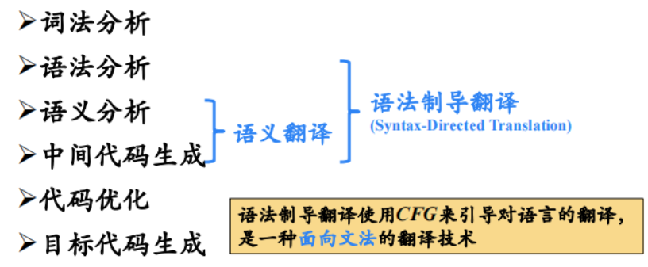
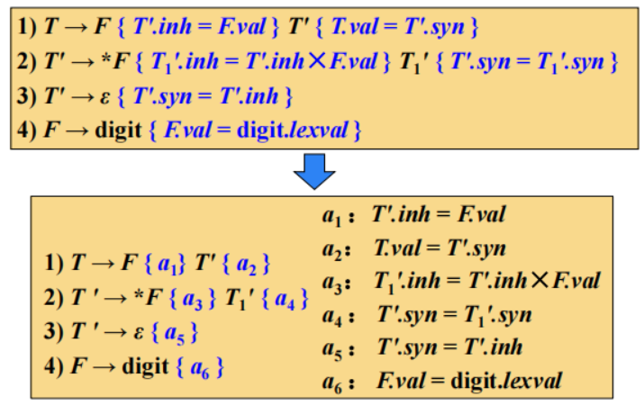

编译原理第7章：语法制导翻译
第7章 语法制导翻译
1 语法制导翻译概述

如何表示语义信息：为CFG中的文法符号设置语义属性，用来表示语法成分对应的语义信息。
如何计算语义属性：
- 文法符号的语义属性值是用与文法符号所在产生式（语法规则）相关联的语义规则来计算的
- 对于给定的输入串 ，构建的语法分析树，并利用与产生式（语法规则）相关联的语义规则来计算分析树中各结点对应的语义属性值
1.1 语法制导定义(SDD)
SDD是对CFG的推广，将每个文法符号和一个语义属性集合相关联，将每个产生式和一组语义规则相关联，这些规则用于计算该产生式中各文法符号的属性值。
如果是一个文法符号，是的一个属性，则用表示属性在某个标号为的分析树结点上的值。
1.2 语法制导翻译方案(SDT)
SDT是在产生式右部嵌入了程序片段的CFG，这些程序片段称为语义动作。按照惯例，语义动作放在花括号内。
一个语义动作在产生式中的位置决定了这个动作的执行时间。
1.3 SDD与SDT
SDD是关于语言翻译的高层次规格说明，隐蔽了许多具体实现细节，使用户不必显式地说明翻译发生的顺序。
SDT可以看作是对SDD的一种补充，是SDD的具体实施方案。显式地指明了语义规则的计算顺序，以便说明某些实现细节。
2 语法制导定义SDD
文法符号的属性：
- 综合属性 (synthesized attribute)
- 继承属性 (inherited attribute)
2.1 综合属性
在分析树结点 N上的非终结符A的综合属性只能通过** N的子结点**或 N本身的属性值来定义。
终结符可以具有综合属性。终结符的综合属性值是由词法分析器提供的词法值，因此在SDD中没有计算终结符属性值的语义规则。
2.2 继承属性
在分析树结点 N上的非终结符A的继承属性只能通过N的父结点、N的兄弟结点或 N本身的属性值来定义。
终结符没有继承属性。终结符从词法分析器处获得的属性值被归为综合属性值。
3 SDD的求值顺序
SDD为CFG中的文法符号设置语义属性。对于给定的输入串，应用语义规则计算分析树中各结点对应的属性值。
按照什么顺序计算属性值？
语义规则建立了属性之间的依赖关系，在对语法分析树节点的一个属性求值之前，必须首先求出这个属性值所依赖的所有属性值。
3.1 依赖图
依赖图是一个描述了分析树中结点属性间依赖关系的有向图。分析树中每个标号为的结点的每个属性都对应着依赖图中的一个结点。
如果属性的值依赖于属性的值，则依赖图中有一条从的结点指向的结点的有向边。
3.2 属性值的计算顺序
可行的求值顺序是满足下列条件的结点序列：如果依赖图中有一条从结点到$ N_jN_i→N_ji < jN_iN_j $前面），这样的排序将一个有向图变成了一个线性排序，这个排序称为这个图的拓扑排序（topological sort）。
从计算的角度看，给定一个SDD，很难确定是否存在某棵语法分析树，使得SDD的属性之间存在循环依赖关系。存在一个SDD的有用子类，它们能够保证对每棵语法分析树都存在一个求值顺序，因为它们不允许产生带有环的依赖图。
不仅如此，接下来介绍的两类SDD可以和自顶向下及自底向上的语法分析过程一起高效地实现。
- S-属性定义 (S-Attributed Definitions, S-SDD)
- L-属性定义 (L-Attributed Definitions, L-SDD)
4 S-属性定义与L-属性定义
4.1 S-属性定义
仅仅使用综合属性的SDD称为S属性的SDD，或S-属性定义、S-SDD。
如果一个SDD是S属性的，可以按照语法分析树节点的任何自底向上顺序来计算它的各个属性值。
S-属性定义可以在自底向上的语法分析过程中实现。
4.2 L-属性定义
L-属性定义（也称为L属性的SDD或L-SDD）的直观含义：在一个产生式所关联的各属性之间，依赖图的边可以从左到右，但不能从右到左（因此称为L属性的，L是Left的首字母）。
4.3 L-SDD的正式定义
一个SDD是L-属性定义，当且仅当它的每个属性要么是一个综合属性，要么是满足如下条件的继承属性：假设存在一个产生式，其右部符号的继承属性仅依赖于下列属性：
- 的继承属性
- 产生式中左边的符号的属性
- 本身的属性，但的全部属性不能在依赖图中形成环路
每个S-属性定义都是L-属性定义
4.4 语义分析要解决的问题
- 如何表示语义信息？
- 如何计算语义信息（语义属性）？
5 语法制导翻译方案SDT
无循环依赖SDD的判定：
语法制导翻译方案（SDT）是在产生式右部中嵌入了程序片段（称为语义动作）的CFG。
SDT可以看作是SDD的具体实施方案。
本节主要关注如何使用SDT来实现两类重要的SDD，因为在这两种情况下，SDT可在语法分析过程中实现：
- 基本文法可以使用LR分析技术，且SDD是S属性的
- 基本文法可以使用LL分析技术，且SDD是L属性的
5.1 将S-SDD转换为SDT
将一个S-SDD转换为SDT的方法：将每个语义动作都放在产生式的最后。
5.2 S-属性定义的SDT 实现
如果一个S-SDD的基本文法可以使用LR分析技术，那么它的SDT可以在LR语法分析过程中实现。
5.3 将L-SDD转换为SDT
如果一个L-SDD的基本文法可以使用LL分析技术，那么它的SDT可以在LL或LR语法分析过程中实现。
- 在非递归的预测分析过程中进行语义翻译
- 在递归的预测分析过程中进行语义翻译
- 在LR分析过程中进行语义翻译
6 在非递归的预测分析过程中进行翻译
扩展语法分析栈：
综合记录出栈时，要将综合属性值复制给后面特定的语义动作，变量展开时（即变量本身的记录出栈时），如果其含有继承属性，则要将继承属性值复制给后面特定的语义动作。

7 在递归的预测分析过程中进行翻译
为每个非终结符A构造一个函数，A的每个继承属性对应该函数的一个形参，函数的返回值是A的综合属性值。对出现在A产生式中的每个文法符号的每个属性都设置一个局部变量。
非终结符A的代码根据当前的输入决定使用哪个产生式。
8 L-属性定义的自底向上翻译
给定一个以LL文法为基础的L-SDD，可以修改这个文法，并在LR语法分析过程中计算这个新文法之上的SDD。
- 首先构造SDT，在各个非终结符之前放置语义动作来计算它的继承属性，并在产生式后端放置语义动作计算综合属性
- 对每个内嵌的语义动作，向文法中引入一个标记非终结符来替换它。每个这样的位置都有一个不同的标记，并且对于任意一个标记M都有一个产生式
- 如果标记非终结符M在某个产生式中替换了语义动作，对进行修改得到，并且将关联到上。动作
- 将动作需要的或中符号的任何属性作为M的继承属性进行复制
- 按照中的方法计算各个属性，但是将计算得到的这些属性作为M的综合属性
 微信
微信 支付宝
支付宝